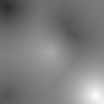
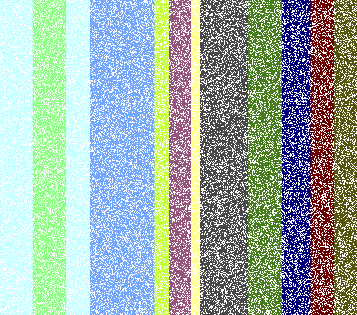
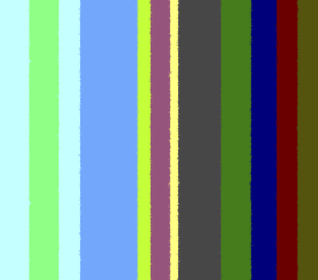
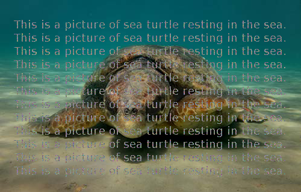
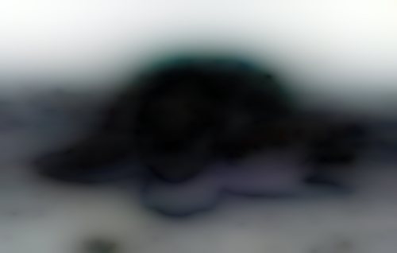
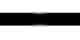
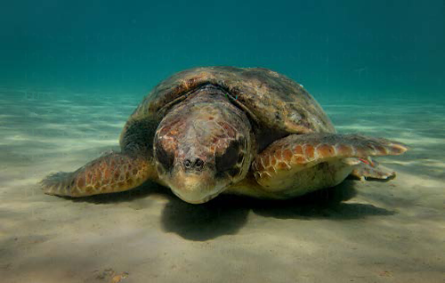

MATLAB Codes for the Image Inpainting Problem
Copyright (c) 2016, Simone Parisotto and Carola-Bibiane Schoenlieb All rights reserved.
Redistribution and use in source and binary forms, with or without modification, are permitted provided that the following conditions are met:
1. Redistributions of source code must retain the above copyright notice, this list of conditions and the following disclaimer.
2. Redistributions in binary form must reproduce the above copyright notice, this list of conditions and the following disclaimer in the documentation and/or other materials provided with the distribution.
THIS SOFTWARE IS PROVIDED BY THE COPYRIGHT HOLDERS AND CONTRIBUTORS "AS IS" AND ANY EXPRESS OR IMPLIED WARRANTIES, INCLUDING, BUT NOT LIMITED TO, THE IMPLIED WARRANTIES OF MERCHANTABILITY AND FITNESS FOR A PARTICULAR PURPOSE ARE DISCLAIMED. IN NO EVENT SHALL THE COPYRIGHT HOLDER OR CONTRIBUTORS BE LIABLE FOR ANY DIRECT, INDIRECT, INCIDENTAL, SPECIAL, EXEMPLARY, OR CONSEQUENTIAL DAMAGES (INCLUDING, BUT NOT LIMITED TO, PROCUREMENT OF SUBSTITUTE GOODS OR SERVICES; LOSS OF USE, DATA, OR PROFITS; OR BUSINESS INTERRUPTION) HOWEVER CAUSED AND ON ANY THEORY OF LIABILITY, WHETHER IN CONTRACT, STRICT LIABILITY, OR TORT (INCLUDING NEGLIGENCE OR OTHERWISE) ARISING IN ANY WAY OUT OF THE USE OF THIS SOFTWARE, EVEN IF ADVISED OF THE POSSIBILITY OF SUCH DAMAGE.
Authors: Simone Parisotto (email: sp751 at cam dot ac dot uk) Carola-Bibiane Schoenlieb (email: cbs31 at cam dot ac dot uk)
Address: Cambridge Image Analysis Centre for Mathematical Sciences Wilberforce Road Cambridge CB3 0WA United Kingdom
Date: September, 2016
Contents
How to cite this work
All the scripts provided are used in Partial Differential Equation Methods for Image Inpainting (Carola-Bibiane Schoenlieb, Cambridge University Press, 2015):
@book{Schonlieb:2015ux,
author = {Sch\"{o}nlieb, Carola-Bibiane},
title = {{Partial Differential Equation Methods for Image Inpainting}},
publisher = {Cambridge University Press},
month = {November}
year = {2015},
}Please use the following entry to cite this code:
@Misc{MATLABinpainting2016,
author = {Parisotto, Simone and Sch\"{o}nlieb, Carola},
title = {MATLAB Codes for the {Image} {Inpainting} {Problem}},
howpublished = {GitHub repository, {MATLAB} Central File Exchange},
month = {September},
year = {2016}
}Absolute Minimizing Lipschitz Extension Inpainting (AMLE)
See the code inpainting_amle.m for the publish function.
Note: Function used to reproduce Figure 4.10 in Partial Differential Equation Methods for Image Inpainting (Carola-Bibiane Schoenlieb, Cambridge University Press, 2015).
Bibliography
- Caselles, V., Morel, J. M., & Sbert, C. (1998). An axiomatic approach to image interpolation. Image Processing, IEEE Transactions on, 7(3), 376-386.
- Almansa, A. (2002). Echantillonnage, interpolation et détection: applications en imagerie satellitaire (Doctoral dissertation, Cachan, Ecole normale supérieure).
cd ./amle imagefilename = 'input_amle.png'; % PARAMETERS lambda = 10^2; tol = 1e-8; maxiter = 40000; dt = 0.01; tic inpainting_amle(imagefilename,lambda,tol,maxiter,dt) toc cd ..
Elapsed time is 47.104303 seconds.
| Input | Output |
 |
 |
Tic/Toc time: Elapsed time is 45.978034 seconds.
Harmonic Inpainting
See the code inpainting_harmonic.m for the publish function.
Note: Function used to reproduce Figure 2.2 in Partial Differential Equation Methods for Image Inpainting (Carola-Bibiane Schoenlieb, Cambridge University Press, 2015).
Bibliography
- Shen, J., & Chan, T. F. (2002). Mathematical models for local nontexture inpaintings. SIAM Journal on Applied Mathematics, 62(3), 1019-1043.
cd ./harmonic imagefilename = 'input_harmonic.png'; maskfilename = 'mask_harmonic.png'; % PARAMETERS lambda = 10; tol = 1e-5; maxiter = 500; dt = 0.1; inpainting_harmonic(imagefilename,maskfilename,lambda,tol,maxiter,dt) cd ..
| Input | Output |
|  |  |
Tic/Toc time: Elapsed time is 1.010271 seconds.
Mumford-Shah Inpainting
See the code inpainting_mumford_shah.m for the publish function.
Note: Function used to reproduce Figure 7.3 in Partial Differential Equation Methods for Image Inpainting (Carola-Bibiane Schoenlieb, Cambridge University Press, 2015).
Bibliography
- Esedoglu, S., & Shen, J. (2002). Digital inpainting based on the Mumford-Shah-Euler image model. European Journal of Applied Mathematics, 13(04), 353-370.
cd ./mumford-shah imagefilename = 'input_mumford_shah.png'; maskfilename = 'mask_mumford_shah.png'; % PARAMETERS maxiter = 20; tol = 1e-14; param.lambda = 10^9; % weight on data fidelity (should usually be large). param.alpha = 1; % regularisation parameters \alpha. param.gamma = 0.5; % regularisation parameters \gamma. param.epsilon = 0.05; % accuracy of Ambrosio-Tortorelli approximation of the edge set. inpainting_mumford_shah(imagefilename,maskfilename,maxiter,tol,param) cd ..
| Input | Output |
|  |  |
| Levels | |
|  |
Tic/Toc time: Elapsed time is 68.771376 seconds.
Cahn-Hilliard Inpainting
See the code inpainting_cahn_hilliard.m for the publish function.
Note: Function used to reproduce Figure 5.9 in Partial Differential Equation Methods for Image Inpainting (Carola-Bibiane Schoenlieb, Cambridge University Press, 2015).
Bibliography
- Bertozzi, A., Esedoglu, S. & Gillette, A. (2007). Inpainting of binary images using the Cahn-Hilliard equation, IEEE Transactions on image processing 16.1 pp. 285-291 (2007).
- Schoenlieb, C.-B. & Bertozzi, A. (2011). Unconditionally stable schemes for higher order inpainting, Communications in Mathematical Sciences, Volume 9, Issue 2, pp. 413-457 (2011).
cd ./cahn-hilliard imagefilename = 'input_cahn_hilliard.png'; maskfilename = 'mask_cahn_hilliard.png'; % PARAMETERS maxiter = 4000; param.epsilon = [100 1]; param.lambda = 10; param.dt = 1; inpainting_cahn_hilliard(imagefilename,maskfilename,maxiter,param) cd ..
| Input | Output |
 |
 |
Tic/Toc time: Elapsed time is 7.297550 seconds.
Transport Inpainting
See the code inpainting_transport.m for the publish function.
Note: Function used to reproduce Figure 6.1 in Partial Differential Equation Methods for Image Inpainting (Carola-Bibiane Schoenlieb, Cambridge University Press, 2015).
Bibliography
- Bertalmio, M. (2001). Processing of flat and non-flat image information on arbitrary manifolds using partial differential equations.PhD Thesis, 2001.
cd ./transport imagefilename = 'input_transport.png'; maskfilename = 'mask_transport.png'; % PARAMETERS tol = 1e-5; maxiter = 50; dt = 0.1; param.M = 40; % number of steps of the inpainting procedure; param.N = 2; % number of steps of the anisotropic diffusion; param.eps = 1e-10; inpainting_transport(imagefilename,maskfilename,maxiter,tol,dt,param) cd ..
| Input | Output |
|  |
Tic/Toc time: Elapsed time is 136.258208 seconds.